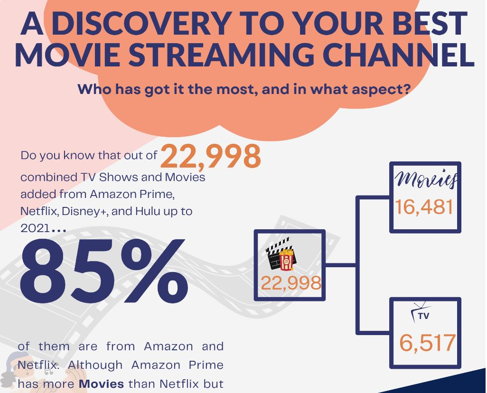

February 10, 2023

In this project, I used regression analysis to determine the best media advertising channel.
The goal was to determine which media channel, among radio, television, and newspapers, had
the highest correlation between sales made and budget spent on each channel. To do this, I
collected and analyzed data on sales, advertising budget, and media channel. The final result
of the project is a Power BI dashboard that provides a clear visual representation of the data,
including the correlations between sales and budget spent on each media channel
In this project, I analysed the ride data of a cab company to understand the most profitable areas to invest in and help the company make data-driven decisions.
I leveraged the Seaborn library in Python to visualise the customer data and gain insights into factors such as the most popular ride destinations, the busiest
times of the day, and the correlation between customer ratings and the number of rides.

The objective of this sampled project, Bank Churn Analysis, amongst other BI projects, was to expose the factors that lead to bank customers leaving the bank and identify
patterns that would help the bank retain its customers. As a case study, I collected and analyzed the data using Power BI to visualize the key insights and find
correlations between various factors such
as age, gender, income, etc.
Here, I used machine learning algorithms to predict credit card default. The goal was to showcase the best model for handling imbalanced data in cases like this. I used 5 classification
models and one deep learning model (an Artificial Neural Network) to evaluate the results. The final product of this project is a Jupiter Python notebook that provides a clear visual
representation of the results, including the best-performing model and the performance of each algorithm. It showed that XGBoost was the best overall, followed by ANN, which
demonstrates my proficiency in using advanced machine learning techniques.

This project involved creating a machine learning model to predict the species of an iris flower based
on its sepal and petal dimensions. The iris flower dataset was used to train and test the model, which
was built using Python's scikit-learn library. A Flask web application was created to allow users to input
the dimensions of an iris flower and get a predicted species as output. Two HTML files were created
for the web application: index.html for inputting values and result.html for displaying the predicted
result. The app was then deployed on the heroku using the app creation channel on the website.

HR Analytics Dashboard, amongst other tableau projects: Ecommerce Sales Analytics, Customer Complaints Dashboard etc., is a perfect example of people data analytics.
The Dashboard provides an insightful overview of key workforce metrics and trends. The organization has a total of 1,470 employees, with an attrition
count of 237, translating to an attrition rate of 16.12%. The remaining active employees stand at 1,233, with an average age of 37. Department-wise, the R&D division
accounts for the majority of attrition at 56.12%, followed by Sales at 38.82% and HR at 5.06%..

I used data visualisation techniques to provide insights into the best streaming channels based on various KPIs, such as the count of movies, TV shows, viewership
level, subscription rate, and the availability of newer content. The final result of the project is a set of infographics that provide a clear and concise
representation of the data, comparing Prime Video (Amazon), Netflix, Hulu, and Disney+.

{kind=link}